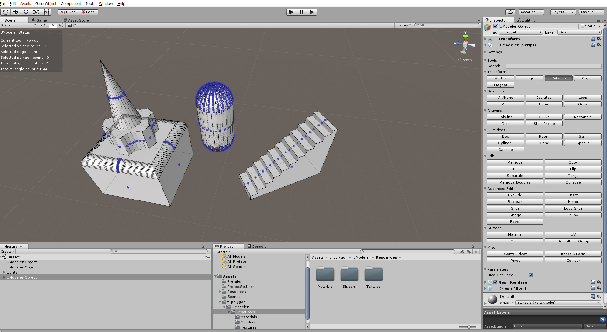

Welcome to UModeler
UModeler is the modeling tool for Unity. UModeler allows you to make meshes for real assets as well as prototype levels without leaving Unity Editor.

Key Features
- Plug-in so creating and editing meshes are possible within Unity Editor.
- Excellent around 50 tools to manipulate geometry.
- The simple polygon is the basic topology so convexhull polygon, oncave polygon and polygon with holes as a polygon edit unit are available. It means that even non-modelers as well as modelers can manipulate meshes without many efforts.
- Solid automatic triangulation with no additional vertices.
- Polygons can be made with various drawing tools as drawing a picture.
- Many additional functions such as User-defined shortcuts, Stable undo/redo, Quick tool finder, Advanced gizmo, Easy attributes editor and Powerful snapping etc.
Tools
Tools in UModeler are categorized into 8 groups.
- Transform : Translate/Rotate/Scale vertices, edges, polygons and objects, Magnet
- Selection : All/None, Isolated, Loop, Ring, Invert and Grow
- Drawing : Polyline, Curve, Rectangle, Disc and Stair Profile
- Primitives : Box, Room, Stair, Cylinder, Cone, Sphere and Capsule
- Edit : Remove, Copy, Fill, Flip, Separate, Merge, Remove Doubles and Collapse.
- Advanced Edit : Extrude, Inset, Boolean, Mirror, Slice, Loop Slice, Bridge, Follow and Bevel
- Surface : Material, UV, Color and Smoothing Group
- Misc : Center Pivot, ResetXForm, Pivot and Collider